先生のための、道具と教材の棚
現役の教員がつくった、
現役の教員がつくった、
無料の道具と教材の棚。
スライドやおたよりに使えるイラスト・写真の素材、そのまま刷れるプリント、校務の道具。完成品はいつも無料です。
スライドやおたよりに使えるイラスト・写真の素材、そのまま刷れるプリント、校務の道具。完成品はいつも無料です。
棚は8つに分かれています。どれも選んでダウンロードするだけ。登録はいりません。
3年社会「市の様子」の地域資料を、電子黒板でも一人一台端末でも、そのまま開いてペンで書きこめるWeb教材にしました。「ここを見て」と印をつけながら、全員で同じ資料を読み取れます。
School Stock の Stock は、プリントだけではありません。スライド・ワークシート・学級通信・掲示にそのまま貼れる、自作のイラストと写真の棚です。教科・学年・用途からさがせて、イラストはカラーと白黒を選べます。全部無料、クレジット表記もいりません。

理科・社会・国語・行事・おたよりまで、あわせて837点。教科／学年／用途でしぼりこんで、その場でダウンロードできます。動きで見せたい場面には、GIF・MP4の「うごく解説」も。
無人の教室や廊下、理科の観察対象、社会の産業や地域の風景を99枚。使ったプロンプトも全部のせているので、自分で作り直せます。Adobe Fireflyで作った画像で、本物の写真ではありません。
学校だより・学級通信・学校ホームページで使うときのご案内です。著作権法35条とおたよりの関係、この棚の約束、教育委員会からのご相談についてまとめています。
そのまま印刷して使える教科のプリント。あわせて1,400枚以上。答えつきでぜんぶ無料です。
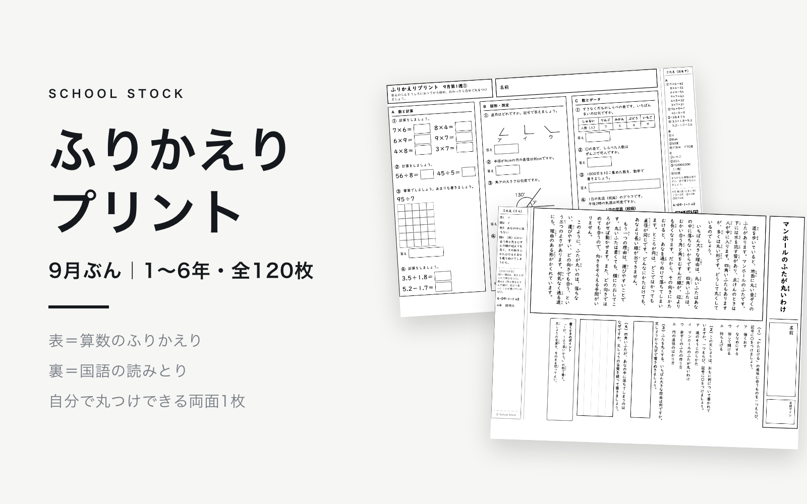
毎日1枚の両面プリント。表は算数のふりかえり、裏は国語の読みとり。答えの帯を折りこんであるので、子どもが自分で丸をつけられます。
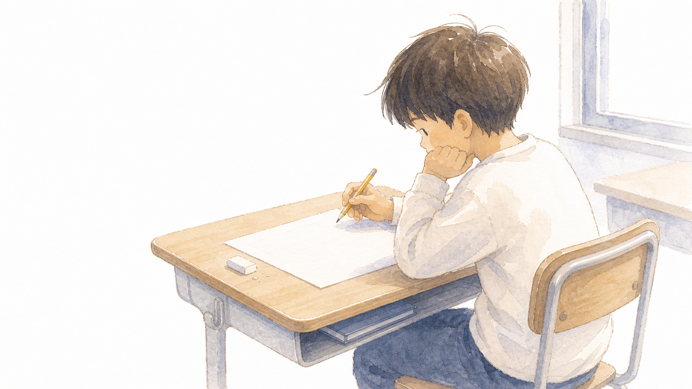
1単元＝きそ→よみとる→かんがえる→あらわすの4まい＋解答。基礎の1枚から、学力テストで出るような読み取り・思考・記述まで登れます。中学数学は中3の1年ぶんがそろいました。

読解・言葉・作文・聞き取りの4分野を全学年ぶん。検索と解説ページつき。

ふだんの演習と宿題に。基礎・標準・応用・思考力・まとめの5枚で刷り分けられます。啓林館の年間指導計画に沿って作成。

実態差のある教室に。到達目標は全員同じで、支援の量だけがちがう4レベル。子どもが自分に合う1枚を選べます。
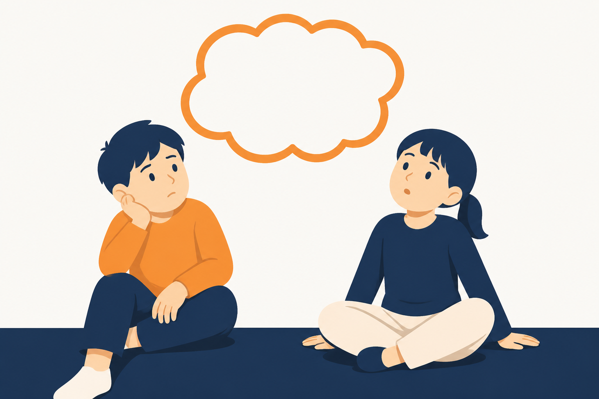
早く終わった子・もっと考えたい子に渡す1まいもの。1まいに考え方が1つ。4年1学期までの内容だけで解けるので、単元に関係なく渡せます。

基礎知識・技能をおさえる1枚もの。図やグラフは自作。答えは各PDFの2枚目に赤字で。

グラフ・表・年表・雨温図を読み取る練習に。資料は自作。答えは各PDFの2枚目に赤字で。

単元のはじめに配る「たんげんカード」と毎時間の「ふりかえりカード」の2本立て。低学年は文字を大きく。

勉強の前に頭をあたためる認知機能トレーニング。4分野を★1〜3から子どもが自分で選べます。書く量少なめ・得点なし。
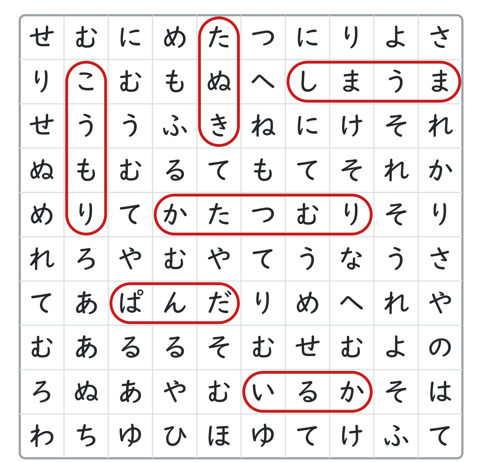
ますの中にかくれた ことばをさがす「ことばさがし」と、ふとい ますを集めて さいごの ことばをつくる「ひらがなクロスワード」。
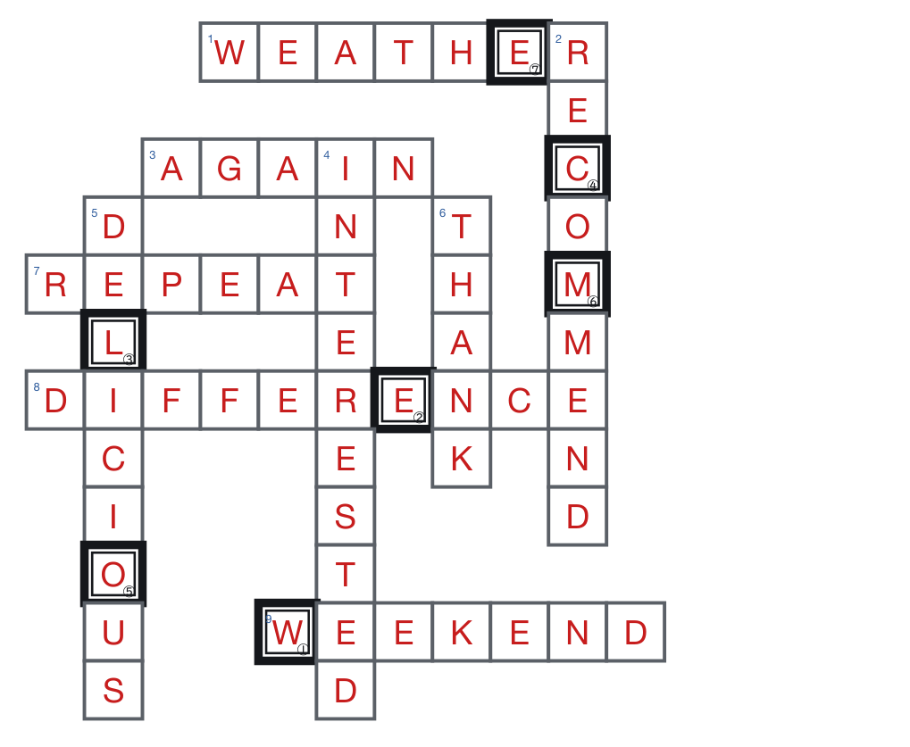
Word Search と Crossword を、小学校高学年から中1〜3・高1〜3・社会人・ALTとの会話練習まで9レベルで。BONUS WORDつき。
「読めない・手が止まる・ミスが多い」。気になる子への支援を、研究の根拠つきで、教室で使える形にした棚です。

つまずきのある子が「自分を助ける」ための、声に出す合言葉カード。研究で効果が確かめられた支援を、どの教科・場面でも使える形に。

「問題文が読めない・定着しない・手が止まる」を、国内の研究と公的資料の根拠で考える、通常学級の担任のための連載。
算数の実態別プリント（式と言葉で説明）も、この棚と同じ考え方でつくっています。国と全国の教育センターが公開している実践・指導案・自立活動の手引きは、特別支援 実践リンク集にまとめました。
授業の準備と校務の手間をへらす道具。インストールも登録もいりません。
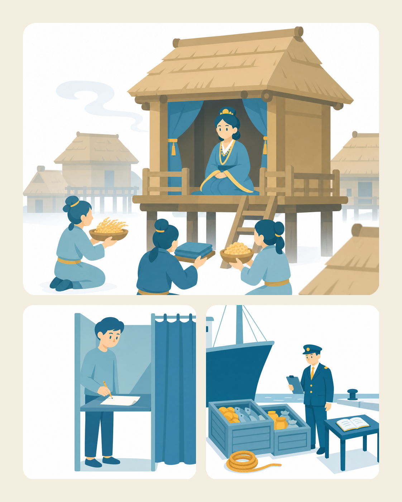
3〜6年の社会科の言葉を、図（イラスト）でひける辞典。意味・例文・関連語・見方考え方までまとめて。授業のふり返りや自主学習、スライドの用語説明に。
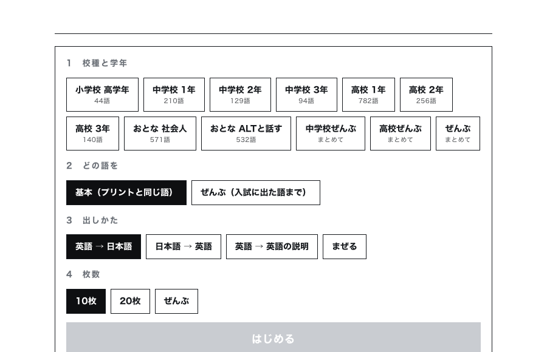
校種と学年をえらぶと、その学年の英単語をランダムに1枚ずつ。英語→日本語のほか、英語の説明で出す英英モードも。

PDFの結合・修正・縦書きを、児童の情報を外に出さず、このパソコンの中だけで。
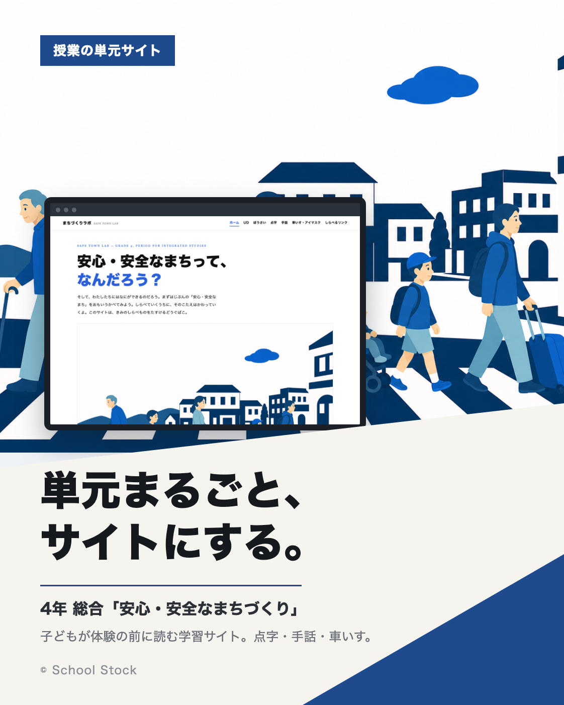
4年 総合「安心・安全なまちづくり」の単元を、まるごとサイトにしたもの。子どもが福祉体験の前に自分で読みます。単元サイトの見本として、どうぞ。

方眼・こくご/さんすうのマス・作文ノートなど。「紙がない！」のときにそのまま刷って配れる一枚を、noteで配布中。

「今、何をしているのか」が全員に見える学びの地図と、計画・リハーサル・振り返りのシート、話型カード。理科・社会・総合で。

社会科の「つかむ・しらべる・まとめる・いかす」に合わせて、子どもがAIへの聞き方をえらべるプロンプト集。一次情報のリンク集つき。
学年と教科、領域を選ぶと、そのまま貼って使える指示文が出てきます。単元の計画・本時の展開・発問・つまずき・評価・授業改善の6つの場面ぶん。各教科の見方・考え方と、その学年でおさえることを入れてあります。画面の上で書きかえてからコピーできます。GeminiとNotebookLMを前提に書いています。
1年から6年まで、13教科を領域ごとに。国語なら「話すこと・聞くこと」「書くこと」「読むこと」で引けます。
1年から3年まで、12教科を領域ごとに。社会なら地理的分野・歴史的分野・公民的分野で引けます。
13教科44科目を内容領域ごとに。現代の国語・歴史総合・物理基礎・情報Ⅰなど、科目名で引けます。
農業・工業・商業・水産・家庭・看護・情報・福祉。実習の安全、課題研究、資格指導まで。
講義とノート、レポートと論文、文献の読み方、研究とゼミ、就職活動。学生に渡せる形にしています。
出てきた内容は、必ず自分の目で確かめてから使ってください。児童生徒の名前や、学校の中だけの情報は打ちこまないこと。学習指導要領などの一次情報へのリンクは、それぞれのページの左メニューから開けます。
GeminiやGoogle Workspaceを授業・校務で使う実践アイデアの棚です。一押しは、Geminiと一緒に作った社会科のデジタル副読本。
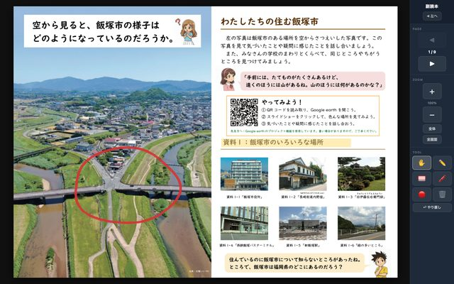
「市の様子」の地域資料を、電子黒板や端末で直接書き込めるWeb副読本に。全9ページ・ペンつき。問いとセットで見せて、印をつけながら確かめられます。
SNSでの失敗を、教室の中だけで動くチャットで安全に体験する授業アイデア。発言は全部先生のシートに残ります。ツールをAIに作らせるプロンプトつき。
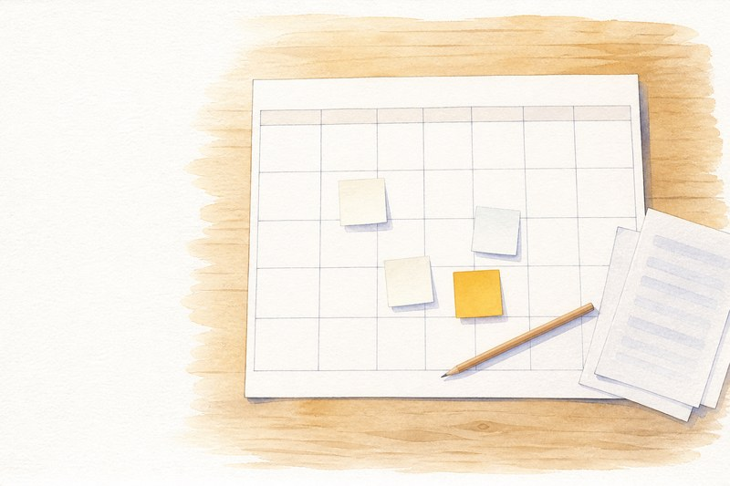
「来週の分も組まないと」を頭から消す道具を、AIエージェントにどう頼んで組んだか。実際に使ったプロンプトを全部のせています。テンプレートと動くサンプルつき。
授業や校務の実践アイデア集。ツール・教材・AI活用のレシピを、見つけて持ち帰れます。図工のおたより・研修の問いづくり・GASの自動化など全23件。
全国の理科研究会・教育センター・大学附属の先行事例を歩いて、単元ごとに「面白い導入・手立て」を並べた授業づくりのヒント集。これが正解ではなく「こう考えたら面白いかも」を、出典リンクとリスペクトつきで。刷って使える指導案・ワークシートもつきます。
読んで、授業や校務のヒントにできる読みものです。
トゥールミンモデルから小学校での絞り方まで。理論の系譜と実践の論文を歩いて確かめた長い読み物。印刷して使えるワークシート4種つき。
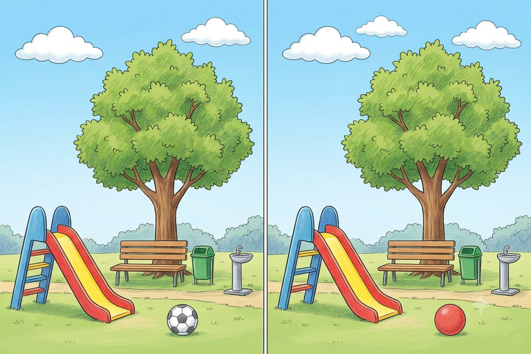
朝の3分、雨の日、課題が早く終わった子の待ち時間に。AIの画像生成で間違い探しをその場で作るプロンプト5本。実際に生成して確かめたものだけ。

出張のごはん、職員室へのおみやげ、研究大会あとのすきま時間。仕事の「ついで」がちょっと楽しくなるGeminiプロンプト10本。

Geminiが「使い所のよくわからない写真」を1枚出します。仲間でひとことを出し合って、いいねが多かった人が優勝。